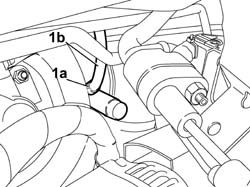

1820B41 hose from clutch reservoir to master cylinder (pump) - r r for rh drive versions
- Path
- Procedures > 18 CLUTCH UNIT > 1820 CLUTCH RELEASE CONTROLS > 1820B HYDRAULIC CLUTCH SYSTEM > 1820B41 hose from clutch reservoir to master cylinder (pump) - r r for rh drive versions
- Kind
- repair procedure (removal / refitting; the operation number is the code)
- Applies to
- all engines; all production periods
- Interactive page
- https://sloeber94.github.io/elrnDB-fDbl/en/#/2584575
Applies to: all engines; all production periods; only with equipment: Right hand drive
 Removing
Removing
 Refitting
RefittingOpen the bonnet
Disconnect the positive battery terminal.
3330C40 brake fluid reservoir plug - r + r
3330C34 brake fluid reservoir - r + r and wash inside - versions with r/h drive and abs
1. Open the band (1a) retaining the pipe (1b) to the clutch pump (1c) and remove it.

Applies to: all engines; all production periods; only with equipment: Right hand drive
Refitting
RemovingConnect the pipe to the clutch pump and close the retaining band.
3330C34 brake fluid reservoir - r + r and wash inside - versions with r/h drive and abs
3330C40 brake fluid reservoir plug - r + r
0010T67 hydraulic clutch system bleed air
Connect the positive battery terminal.
Close the bonnet lid.